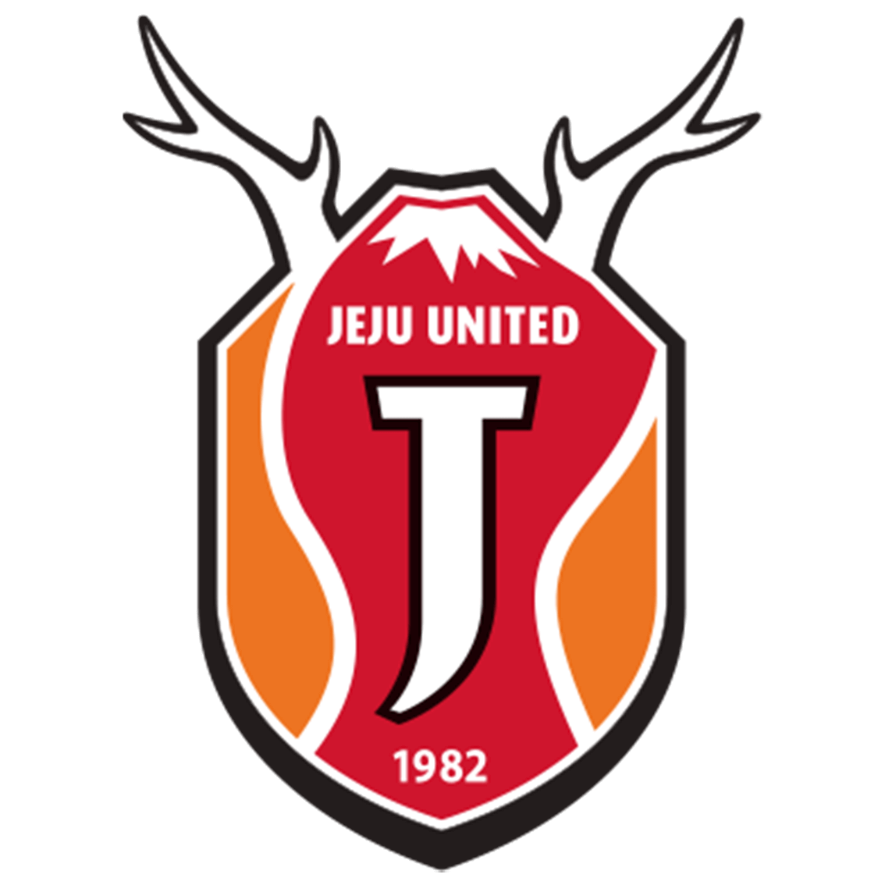

-

강원FC 강웅이
Let's 경남FC 팔로우 and 구독 and 좋아yo!Let's 경남FC 팔로우 and 구독 and 좋아yo!Let's 경남FC 팔로우 and 구독 and 좋아yo! Let's 경남FC 팔로우 and 구독 and 좋아yo!Let's 경남FC 팔로우 and 구독 and 좋아yo!Let's 경남FC 팔로우 and 구독 and 좋아yo! Let's 경남FC 팔로우 and 구독 and 좋아yo!Let's 경남FC 팔로우 and 구독 and 좋아yo!Let's 경남FC 팔로우 and 구독 and 좋아yo! -
강원FC 강웅이
Let's 경남FC 팔로우 and 구독 and 좋아yo!Let's 경남FC 팔로우 and 구독 and 좋아yo!Let's 경남FC 팔로우 and 구독 and 좋아yo! Let's 경남FC 팔로우 and 구독 and 좋아yo!Let's 경남FC 팔로우 and 구독 and 좋아yo!Let's 경남FC 팔로우 and 구독 and 좋아yo! Let's 경남FC 팔로우 and 구독 and 좋아yo!Let's 경남FC 팔로우 and 구독 and 좋아yo!Let's 경남FC 팔로우 and 구독 and 좋아yo! -

강원FC 강웅이
Let's 경남FC 팔로우 and 구독 and 좋아yo!Let's 경남FC 팔로우 and 구독 and 좋아yo!Let's 경남FC 팔로우 and 구독 and 좋아yo! Let's 경남FC 팔로우 and 구독 and 좋아yo!Let's 경남FC 팔로우 and 구독 and 좋아yo!Let's 경남FC 팔로우 and 구독 and 좋아yo! Let's 경남FC 팔로우 and 구독 and 좋아yo!Let's 경남FC 팔로우 and 구독 and 좋아yo!Let's 경남FC 팔로우 and 구독 and 좋아yo!